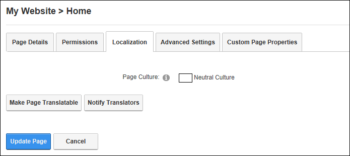

Localization Settings for Existing Pages
How to set the Localization setting for pages on the Page Settings page.
The Localization section is only displayed when content localization is enabled on the site. See "Enabling Localized Content"
Page editors and translators for any language.
- Select Page Localization from the Edit Page menu on the ControlBar.
- Select the Localization tab.
- At Page Culture, the culture of the current page is displayed. In the below example, the page is "Neutral Culture" which means that the same page will be used across all cultures on the site.

Next Steps:
- Make Page Translatable
-
Notify Translators